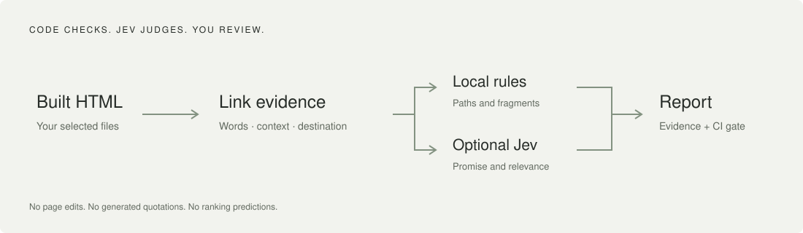

OPEN-SOURCE · INTERNAL-LINK AUDITING
Working link.
Wrong promise.
A 200 response cannot tell you whether “installation guide” leads to a pricing page. Check the words, the context, and the destination.
Python 3.11+ · MIT · No API key for local checks
A broken expectation is still a broken experience.
“Read the installation instructions before deploying.”
/pricing/ — Plans, invoices and billing policies
Small judgments.
Inspectable decisions.

Read the built site.
Extract links, visible anchors, nearby context and target text. No browser session or live crawler.
Check what code can know.
Resolve internal paths and fragments. Find missing destinations, empty anchors and generic labels.
Ask only what needs judgment.
Opt in to Jev for promise and relevance signals. Keep uncertain cases under review, not silently passed.
No dashboard.
No content rewrites.
Run a local audit, share an HTML report, or fail CI on new findings. Agents use the same JSON interface as everyone else.
Read the agent workflow ↗anchorlint audit ./dist --base-url https://example.com --format json --output audit.jsonUseful evidence.
Not an SEO oracle.
AnchorLint does not measure Google rankings, forecast traffic, certify accessibility or automatically fix your website. Jev is an optional hosted service: calls send selected text to TypeSafe and may cost money. Its typed answers can still be wrong.
Is the whole tool open source?
AnchorLint’s code is MIT-licensed. Jev is a separate hosted dependency, not model weights included in this project. Rules mode runs without it.
Does it crawl my live website?
No. Audit the built HTML output or a versioned JSON inventory. The current tool does not fetch pages or execute JavaScript.
How is this different from a broken-link checker?
It retains deterministic target and fragment checks, then optionally asks whether each link’s wording and surrounding context fit the destination. Evidence and uncertainty are part of the result.
Does adding “AI” guarantee better SEO?
No. AnchorLint helps you review link quality. It has not measured ranking uplift or calibrated its heuristics against search outcomes.